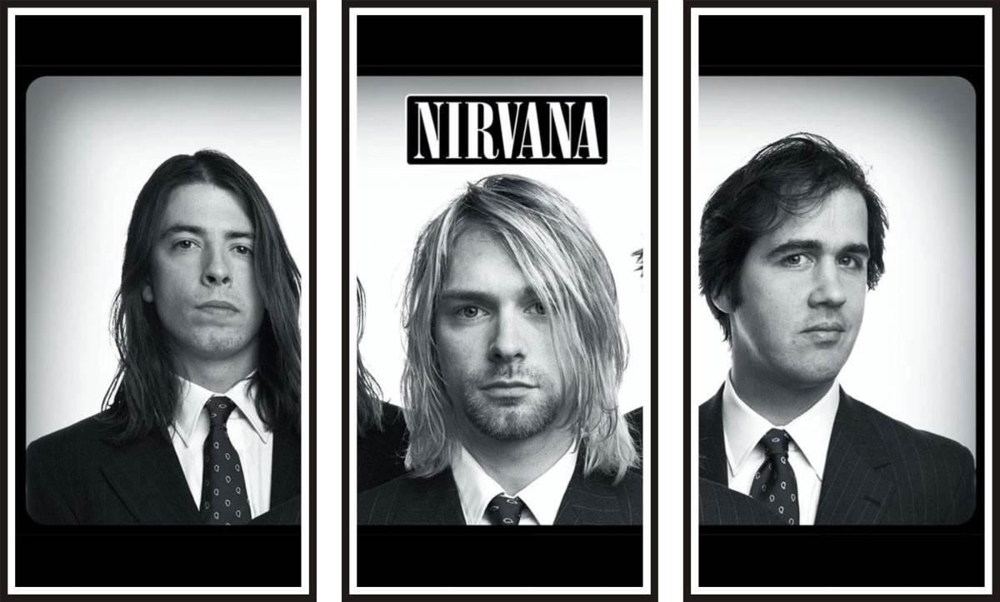

El rock es un término amplio que agrupa una variedad de géneros de música popular originados como rock and roll a principios de la década de 1950 en Estados Unidos y que evolucionó en un gran rango de diferentes estilos en los 60, particularmente en Reino Unido y Estados Unidos.12 Posee sus raíces en el rock and roll de los 40 y 50, proveniente de la combinación de géneros anteriores como el blues, rhythm and blues y el country. La música rock también se nutrió fuertemente del blues eléctrico y el folk, e incorporó influencias del jazz, la música clásica y otras fuentes. El rock se ha centrado en la guitarra eléctrica, normalmente como parte de un grupo integrado por cantante, bajo, batería y, algunas veces, instrumentos de teclado como el órgano y el piano. Típicamente, el rock se centra en las canciones, habitualmente con compás de 4/4 (a diferencia del compás 8/8 generalmente empleado en primeras formas de r&b y el rock and roll) usando una estructura verso-estribillo, sin embargo el género se ha vuelto extremadamente diverso y las características musicales comunes son difíciles de definir. Como la música pop, las letras se centran a menudo en el amor romántico, pero también tratan un rango amplio de otros temas con un enfoque frecuente en lo social y lo político. A finales de la década de 1960, referida como la "era dorada" o el periodo del "rock clásico", surgieron distintos subgéneros distintivos del rock, incluyendo híbridos como el blues rock, folk rock, country rock y el jazz rock, muchos de los cuales contribuyeron al desarrollo del rock psicodélico, influenciado por la escena psicodélica contra-cultural. Los nuevos géneros que emergieron de esta escena incluyen el rock progresivo, que extendió los elementos artísticos; el glam rock, que resaltó el espectáculo en vivo y el estilo visual; y el subgénero mayor, diverso y longevo que es el heavy metal, que se centraba en el volumen, el poder y la velocidad. En la segunda mitad de los años 1970, el punk intensificó y reaccionó contra algunas de estas tendencias para producir una música cruda y energética. El punk fue una influencia en la década de 1980 en el desarrollo de otros subgéneros, entre ellos el new wave, el post-punk y el movimiento del rock alternativo. Desde la década de 1990, el rock alternativo comenzó a dominar el género y saltó a la fama en las formas de grunge, Britpop e indie rock. Desde entonces han aparecido otros subgéneros de fusión como el pop punk, rap rock y nu metal, así como intentos de recordar la historia del rock, incluyendo el resurgimiento de géneros como el garage rock, el post punk y el synth pop a principios de los 2000. La música rock también abarcó y sirvió de vehículo para los movimientos culturales y sociales, llevando a la creación de subculturas importantes incluyendo los mods y los rockers en el Reino Unido, y la contracultura hippie que se propagó en San Francisco (Estados Unidos) en la década de 1960. De forma similar, la cultura punk de la década de 1970 originó las subculturas visualmente distintivas Emo y Gótico. Heredera de la tradición folclórica de la canción de protesta, la música rock ha sido asociada con el activismo político así como los cambios en las actitudes sociales sobre el racismo, el sexo y el uso de drogas, y es usualmente vista como una expresión de la rebelión juvenil contra el consumismo y conformismo.
El grunge, en ocasiones conocido como sonido de Seattle,6 es un subgénero del rock alternativo influido por el punk, el hardcore punk, el noise rock, el heavy metal y con estructuras cercanas al rock clásico.123 Surgió a finales de la década de los ochenta, con grupos provenientes principalmente del estado norteamericano de Washington, en particular, del área de Seattle. La primera compañía que impulsó y dio a conocer el género fue la discográfica Sub Pop, apoyando a bandas que serían fundamentales en el desarrollo del naciente género, como Nirvana, Green River, Pearl Jam o Soundgarden. Las características distintivas del sonido grunge eran sus guitarras fuertemente distorsionadas y enérgicas, melodías vocales, muchas veces pegadizas y repetitivas, así como baterías predominantes; mientras sus letras se caracterizaban por reflejar apatía y desencanto. Las canciones primerizas y más agresivas del género estuvieron influenciadas por el Sludge metal. El grunge se expandió a nivel mundial durante la primera mitad de la década de los noventa, impulsado principalmente por el éxito comercial de los álbumes Nevermind de Nirvana y Ten de Pearl Jam. Dicho éxito catapultó la popularidad del rock alternativo e hizo del grunge el género de hard rock más popular de ese tiempo. A pesar de esto, muchos grupos estuvieron siempre incómodos con su estatus de superestrellas y por la aparición, a causa de la influencia de los medios, de un movimiento grunge, lo que en algunos casos les provocaron conflictos internos que los llevaron desde la separación, hasta la muerte de algunos de sus integrantes. La popularidad del grunge comenzaría a desvanecerse a comienzos del nuevo siglo. De las grandes bandas que dieron vida al movimiento, hasta 2019 sólo quedan activas Pearl Jam, Alice in Chains, Mudhoney y The Melvins. Aún con esto, la influencia del grunge fue determinante en el posterior desarrollo del rock.
Clic Aqui para ir a una playlist de Spotify